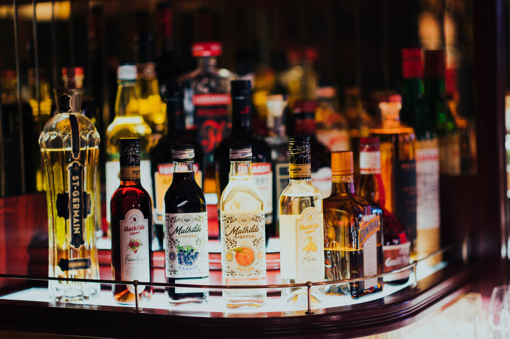
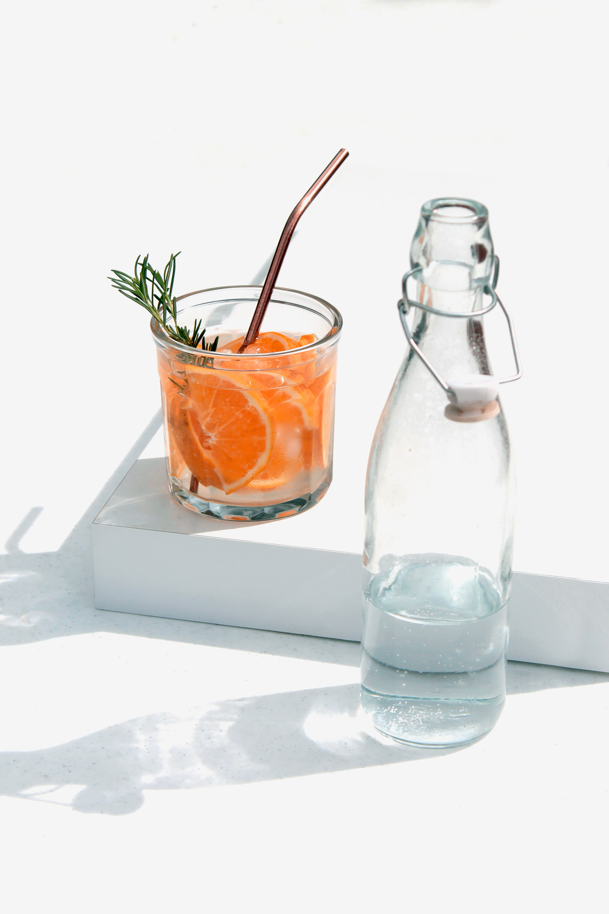
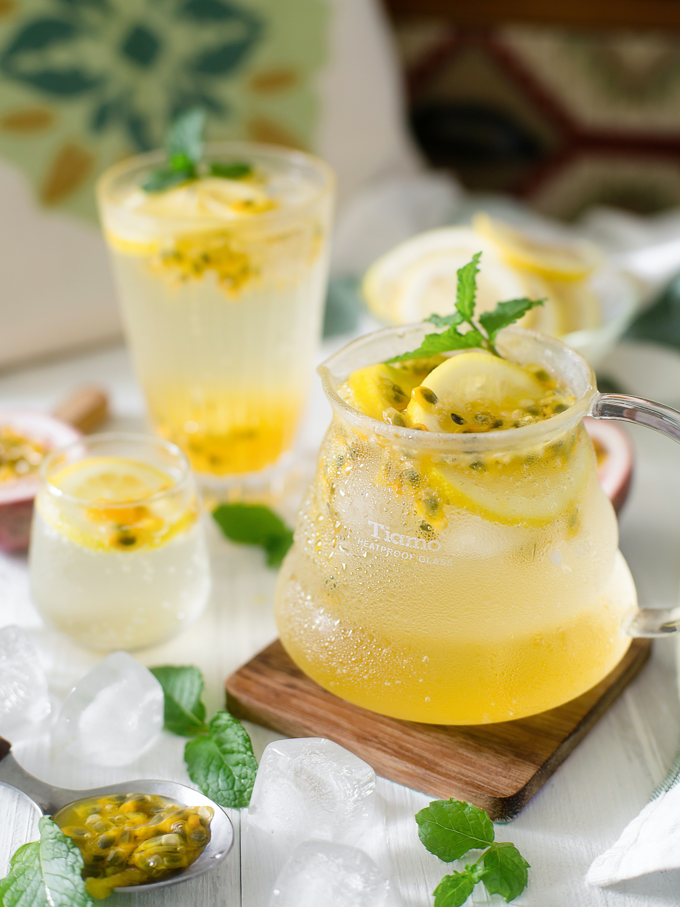

A versatile spirit, white rum features as the base ingrident in many well-loved cocktails, like the Mojito and diaquiri. A classic Diaquiri is a winner in itself but you can offer your guests afew flavour options they're bound to be impressed.
Vodka remains to be the most popular spirit in the US and for good reason. An alcohol base of vodka can create the simplest of cocktails, from the clasic cosmopolitan or the Moscow Mule to a more complex Bloody Mary or Espresso Martini
With two light liquors stocked, you will want to add two dark liquors too, for a real selection of possible cocktails. Whiskey is an obvious choice because it features in many popular cocktails, including two of the best.
 next page